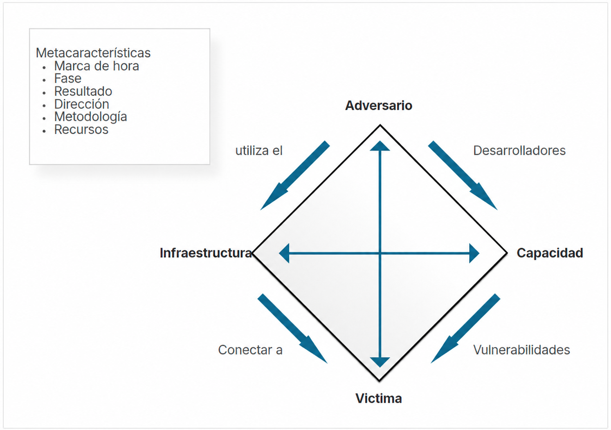
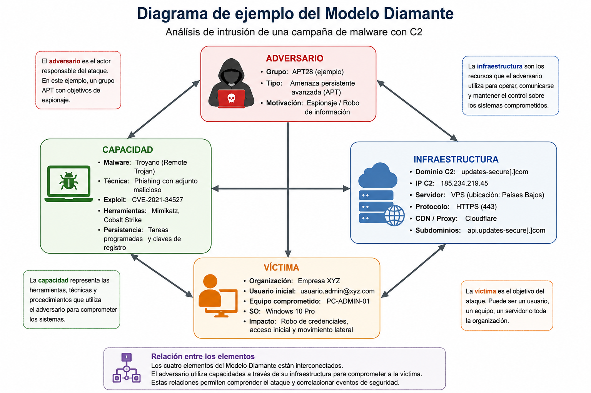
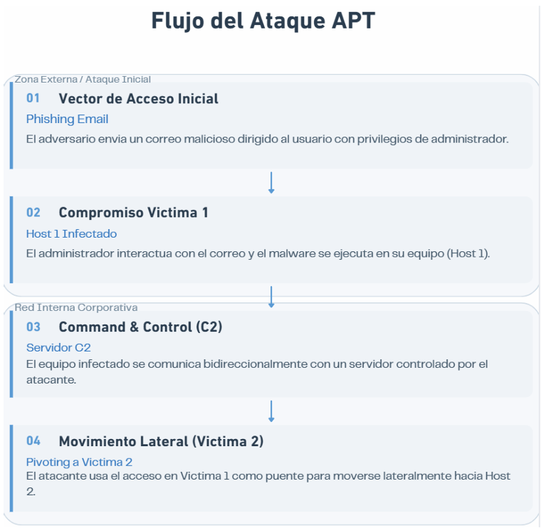

Actividad 18: Análisis de intrusiones con el modelo diamante
Artículo técnico digital sobre análisis de intrusiones mediante Modelo Diamante, Cyber Kill Chain, hilos de actividad y correlación de eventos.
1. Introducción
En la actualidad, las organizaciones dependen ampliamente de infraestructuras digitales para almacenar, procesar y transmitir información crítica. Esta dependencia aumenta la exposición a amenazas cibernéticas cada vez más sofisticadas, capaces de comprometer sistemas, mantener persistencia, evadir controles de seguridad y desplazarse lateralmente dentro de redes corporativas.
El Modelo Diamante de Análisis de Intrusiones permite estructurar un evento de ataque a partir de cuatro elementos principales: adversario, capacidad, infraestructura y víctima. Al relacionarlo con la Cyber Kill Chain, es posible comprender la progresión del ataque, identificar patrones de comportamiento y mejorar la respuesta ante incidentes.
En esta actividad se analiza un escenario de intrusión utilizando ambos enfoques. Se identifican los elementos del Modelo Diamante, se clasifican eventos dentro de la Kill Chain y se explican los hilos de actividad asociados al compromiso de múltiples víctimas dentro de una red organizacional.
2. Objetivos
2.1 Objetivo general
Aplicar el Modelo Diamante del Análisis de Intrusiones para identificar, estructurar y correlacionar eventos de ciberataques, relacionándolos con la Cyber Kill Chain para comprender el comportamiento del adversario.
2.2 Objetivos específicos
Clasificar elementos
Identificar adversario, capacidad, infraestructura y víctima dentro del evento de intrusión.
Analizar incidente
Descomponer un escenario realista en eventos técnicos relacionados con la intrusión.
Relacionar fases
Vincular los eventos detectados con fases de la Cyber Kill Chain y detectar patrones de ataque.
3. Marco teórico
3.1 ¿Qué es un incidente de ciberseguridad?
Un incidente de ciberseguridad es cualquier evento que compromete o amenaza la confidencialidad, integridad o disponibilidad de la información y de los sistemas tecnológicos de una organización. Puede originarse por actividades maliciosas, errores humanos, fallos técnicos o vulnerabilidades explotadas por atacantes.
Entre los incidentes más comunes se encuentran infecciones por malware, ataques de phishing, accesos no autorizados, robo de información, ataques de denegación de servicio, ransomware y explotación de vulnerabilidades. Su gravedad depende del impacto generado sobre los activos digitales, los servicios afectados y la información comprometida.
La detección temprana y el análisis de incidentes son fundamentales para reducir daños, restaurar operaciones y evitar futuras intrusiones. Para ello se emplean modelos de análisis que permiten comprender el comportamiento del atacante y establecer respuestas adecuadas.
3.2 ¿Qué es el Modelo Diamante?
El Modelo Diamante de Análisis de Intrusiones es una metodología de ciberseguridad diseñada para analizar y correlacionar eventos relacionados con ataques informáticos. Su objetivo es proporcionar una estructura lógica para comprender cómo interactúan los elementos involucrados en una intrusión.
El modelo establece que todo evento de intrusión puede representarse mediante cuatro componentes: adversario, capacidad, infraestructura y víctima. La relación entre estos elementos permite identificar patrones de ataque, rastrear actividades maliciosas y comprender el comportamiento del atacante dentro de una campaña.
Actor responsable de la intrusión.
Herramientas, malware, exploits y técnicas.
Usuario, equipo, servidor u organización afectada.
Dominios, IP, VPS y servidores C2.
Recurso visual 1: Modelo Diamante

Guarda la imagen en assets/act18-modelo-diamante.png.
3.3 Elementos del Modelo Diamante
3.3.1 Adversario
Es el actor responsable de realizar la intrusión o actividad maliciosa. Puede ser un ciberdelincuente individual, grupo organizado, hacktivista, amenaza interna o actor patrocinado por un Estado.
Identificarlo permite comprender sus tácticas, técnicas y procedimientos, además de relacionar el ataque con campañas previas o grupos conocidos.
3.3.2 Capacidad
Representa las herramientas, técnicas y recursos usados por el adversario: malware, exploits, scripts, phishing, herramientas de acceso remoto, persistencia y movimiento lateral.
Su análisis ayuda a entender el nivel técnico del atacante y los mecanismos empleados para comprometer sistemas.
3.3.3 Infraestructura
Incluye servidores, dominios, direcciones IP, VPS, servicios de alojamiento, redes comprometidas y canales de comunicación usados por el atacante.
Permite identificar servidores C2, detectar conexiones sospechosas, bloquear indicadores y correlacionar campañas.
3.3.4 Víctima
Es el usuario, equipo, servidor, aplicación u organización afectada por el ataque. Puede existir una víctima primaria y varias víctimas secundarias afectadas por movimiento lateral.
Su análisis permite determinar sistemas comprometidos, impacto, información afectada, nivel de acceso y riesgos para la organización.
Recurso visual 2: Ejemplo aplicado del Modelo Diamante

Guarda la imagen en assets/act18-diamante-ejemplo.png.
3.4 ¿Qué es Cyber Kill Chain?
La Cyber Kill Chain, desarrollada por Lockheed Martin, describe las etapas de un ataque cibernético desde el reconocimiento inicial hasta el cumplimiento de los objetivos del adversario. Esta metodología permite identificar puntos de detección, interrupción y respuesta durante la progresión del ataque.
El atacante investiga objetivos, tecnologías, correos y posibles vulnerabilidades.
Combina un exploit con una carga maliciosa para preparar el ataque.
Transmite el arma al entorno de la víctima, por ejemplo mediante phishing.
El código malicioso se activa y aprovecha una vulnerabilidad o interacción del usuario.
Se instala malware, backdoor o mecanismo de persistencia en el sistema.
El sistema comprometido se comunica con infraestructura externa del atacante.
El atacante roba datos, cifra archivos o se mueve lateralmente.
4. Caso práctico
4.1 Comprensión del Modelo Diamante
Para comprender el incidente, se organizan sus elementos principales con base en el Modelo Diamante. Esta clasificación permite observar quién ejecuta la intrusión, qué herramientas usa, qué infraestructura sostiene el ataque y qué activos resultan afectados.
| Elemento | Descripción | Ejemplo práctico |
|---|---|---|
| Adversario | Actor responsable de ejecutar la intrusión o actividad maliciosa dentro de la infraestructura objetivo. | Grupo APT especializado en espionaje y compromiso de redes corporativas mediante phishing. |
| Capacidad | Herramientas, técnicas o recursos utilizados por el atacante para ejecutar el ataque y mantener persistencia. | Malware con comunicación C2, técnicas de phishing y herramientas de movimiento lateral. |
| Infraestructura | Recursos tecnológicos utilizados por el adversario para distribuir malware y controlar sistemas comprometidos. | Dominios maliciosos, servidores C2, direcciones IP externas y VPS utilizados para comunicación remota. |
| Víctima | Usuario, equipo, servidor u organización afectada por la intrusión. | Usuario con privilegios administrativos y equipos internos comprometidos dentro de la red corporativa. |
4.2 Análisis del evento
Durante actividades de monitoreo de seguridad en una organización, se detectó comportamiento anómalo en un equipo perteneciente a la red corporativa. El análisis inicial identificó malware ejecutándose en el sistema comprometido, el cual establecía comunicación con dominios asociados a infraestructura de Command and Control.
También se observó que dichos dominios resolvían hacia múltiples direcciones IP externas, generando conexiones salientes desde varios hosts internos. Los registros de tráfico y eventos de red evidenciaron actividad repetitiva hacia estas direcciones externas, lo que sugiere posible compromiso adicional de otros equipos.
Mediante consultas WHOIS y análisis de direcciones IP, se identificó un posible origen relacionado con infraestructura utilizada por el atacante, asociando el incidente con actividades típicas de campañas de intrusión y comunicación remota maliciosa.
| Metacaracterística | Descripción del evento |
|---|---|
| Marca de tiempo | Durante el monitoreo y análisis de tráfico de red corporativo se detectó comportamiento anómalo asociado a malware. |
| Fase | Comando y Control con evidencia posterior de movimiento lateral dentro de la red interna. |
| Resultado | Se identificó comunicación entre múltiples hosts internos y dominios externos asociados a infraestructura maliciosa. |
| Dirección | Equipos comprometidos de la red interna establecieron conexiones salientes hacia direcciones IP externas controladas por el atacante. |
| Metodología | Uso de phishing dirigido, ejecución de malware y técnicas de pivoting para expandir el compromiso dentro de la red corporativa. |
| Recursos | Malware, dominios C2, direcciones IP externas, registros de logs, consultas WHOIS y tráfico de red monitoreado. |
4.3 Análisis de preguntas
4.3.1 ¿Quién es el adversario?
El adversario identificado corresponde a una Amenaza Persistente Avanzada. Puede tratarse de un grupo organizado, como un APT, cuya motivación se orienta al espionaje o robo de información.
4.3.2 ¿Cuál es la capacidad utilizada?
La capacidad inicial fue una campaña de phishing dirigida. Después de la interacción del usuario, la capacidad técnica se centró en la ejecución de malware, además de posibles troyanos, exploits y herramientas de persistencia.
4.3.3 ¿Qué infraestructura se emplea?
Se emplean dominios externos pertenecientes a infraestructura de Command and Control. Estos dominios resuelven hacia múltiples direcciones IP externas para mantener comunicación y control remoto.
4.3.4 ¿Quién es la víctima primaria?
La víctima primaria es un usuario de la red corporativa con privilegios administrativos. El objetivo inicial fue el equipo o host usado por ese administrador al interactuar con el correo malicioso.
4.3.5 ¿Existe evidencia de movimiento lateral?
Sí. Existe evidencia clara de movimiento lateral mediante la técnica de pivoting. El adversario utilizó el primer equipo comprometido como puente, proxy o punto intermedio para enrutar tráfico malicioso, evadir controles perimetrales y comprometer una segunda víctima dentro de la red interna.
Además, los registros de red mostraron conexiones salientes desde varios hosts internos, confirmando la expansión del ataque dentro de la infraestructura corporativa.
4.4 Relación con la Kill Chain
La siguiente correlación permite visualizar el progreso del atacante dentro de la red corporativa y relacionar los eventos detectados con fases de la Cyber Kill Chain.
| Evento detectado | Fase de la Kill Chain | Descripción detallada del evento |
|---|---|---|
| Envío de correo de phishing | Entrega | El atacante envía un correo dirigido a un usuario con privilegios administrativos para introducir el vector de ataque en la red. |
| Ejecución de malware en el host | Explotación / Instalación | El usuario interactúa con el archivo malicioso, permitiendo que el código se ejecute e instale persistencia. |
| Detección de comportamiento anómalo | Detección transversal | Los sistemas de monitoreo identifican procesos no autorizados ejecutándose en memoria. |
| Conexión a dominios externos C2 | Comando y Control | El malware establece conexiones salientes hacia múltiples direcciones IP externas para recibir órdenes del adversario. |
| Acceso a segunda víctima mediante pivoting | Acciones sobre objetivos | El primer host se utiliza como proxy para realizar movimiento lateral y comprometer recursos adicionales en la red interna. |
4.5 Hilos de actividad
El incidente corresponde a un escenario tipo Advanced Persistent Threat. El adversario utilizó múltiples etapas para comprometer sistemas dentro de la infraestructura corporativa: phishing inicial, ejecución de malware, comunicación C2 y uso del primer host comprometido como punto intermedio para movimiento lateral.
Recurso visual 3: Flujo del ataque APT

Guarda la imagen en assets/act18-killchain-hilos.png.
4.5.1 Hilo 1 - Víctima 1
Este hilo representa el vector de acceso inicial y el compromiso de la víctima primaria. El adversario inicia el ataque mediante una campaña de phishing dirigida a un usuario con privilegios administrativos.
Cuando el usuario interactúa con el correo, se ejecuta malware en el primer host. A partir de ese momento, el equipo afectado establece comunicación saliente con servidores de Command and Control, lo que permite al atacante mantener acceso remoto persistente y tomar control parcial del sistema.
4.5.2 Hilo 2 - Víctima 2
Este hilo representa la fase de expansión del ataque dentro del perímetro de la red corporativa. Aprovechando el acceso obtenido en el equipo del administrador, el adversario identifica y ataca a una segunda víctima, que puede ser otro equipo de usuario o un servidor crítico dentro de la red interna.
El segundo compromiso amplía el alcance del ataque y consolida la capacidad de persistencia del adversario en la infraestructura de la organización.
4.5.3 Relación entre ambos hilos: pivoting
La relación entre el Hilo 1 y el Hilo 2 se basa en la técnica de pivoting o movimiento lateral. En lugar de atacar a la segunda víctima desde el exterior, el atacante utiliza el primer host comprometido como punto intermedio o proxy.
Esto le permite enrutar tráfico malicioso a través de una máquina interna de confianza, evadir controles perimetrales como firewalls y comprometer sistemas adicionales de forma más sigilosa.
| Hilo | Descripción | Función dentro del ataque |
|---|---|---|
| Hilo 1 - Víctima 1 | Phishing dirigido, ejecución de malware y comunicación con C2. | Punto de entrada, persistencia inicial y control remoto. |
| Infraestructura C2 | Dominios, direcciones IP externas y servidores del atacante. | Canal de comunicación para recibir instrucciones y mantener control. |
| Hilo 2 - Víctima 2 | Compromiso de otro equipo o servidor interno mediante pivoting. | Movimiento lateral y expansión del alcance del ataque. |
5. Conclusión
El análisis desarrollado mediante el Modelo Diamante y la Cyber Kill Chain permitió comprender de manera estructurada el comportamiento del adversario y la evolución del incidente dentro de la infraestructura corporativa.
A partir del escenario planteado, fue posible identificar los elementos fundamentales de la intrusión: adversario, capacidades utilizadas, infraestructura de Command and Control y víctimas afectadas durante las distintas etapas del ataque.
La correlación de eventos evidenció cómo un ataque iniciado mediante phishing puede evolucionar hacia un compromiso más amplio dentro de la red organizacional mediante persistencia y movimiento lateral.
El análisis de hilos de actividad permitió comprender la relación entre las víctimas y el uso de pivoting para expandir el alcance del ataque. Esto demuestra la importancia de monitorear continuamente el tráfico de red, correlacionar eventos de seguridad y detectar conexiones anómalas hacia infraestructura externa asociada a servidores C2.
Finalmente, esta actividad fortaleció la comprensión de metodologías de inteligencia y análisis de amenazas en ciberseguridad, mostrando que el Modelo Diamante y la Cyber Kill Chain son herramientas fundamentales para investigar incidentes, identificar patrones de ataque y tomar decisiones orientadas a proteger activos organizacionales.
Referencias
- Lockheed Martin. (2015). Obtención de ventajas mediante la metodología Cyber Kill Chain aplicada a la defensa de redes.
- MITRE Corporation. (2024). Framework MITRE ATT&CK.
- National Institute of Standards and Technology. (2012). Computer Security Incident Handling Guide (Special Publication 800-61 Revision 2). U.S. Department of Commerce.
- Caltagirone, S., Pendergast, A., & Betz, C. (2013). The Diamond Model of Intrusion Analysis. Center for Cyber Threat Intelligence and Analysis.